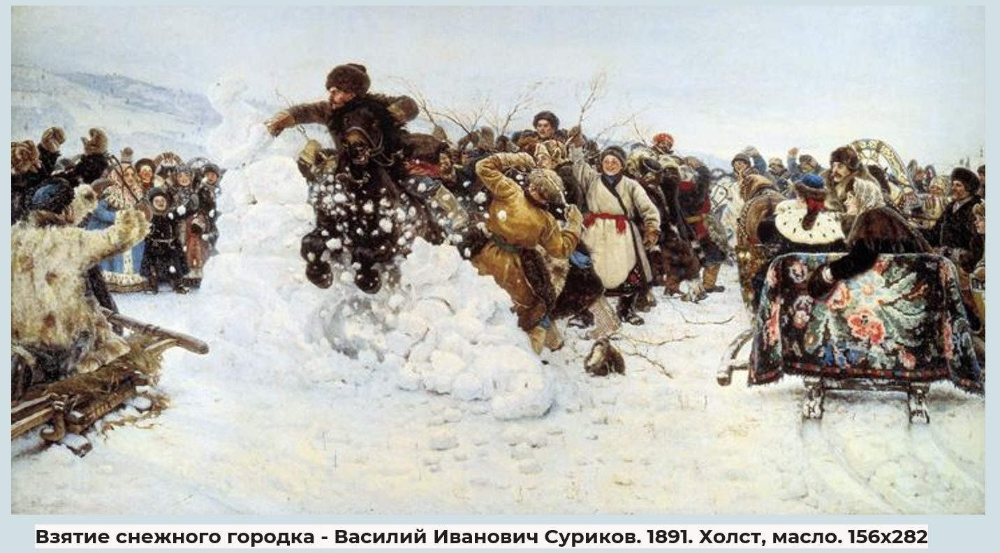

Приобщение к искусству (живопись): в соответствии со списком рекомендованным ФОП ДО п. 21
Воспитывать уважительное отношение и чувство гордости за свою страну в процессе ознакомления с разными видами искусства.
Цель: Познакомить детей с творчеством В.И. Сурикова. Формировать познавательный интерес детей к изобразительному искусству.
Образовательные: знакомить с картиной художника «Взятие снежного городка»; учить детей рассматривать репродукцию картины, отвечать на поставленные вопросы; формировать умение выделять их выразительные средства.
Развивающие: развивать художественный вкус, творческое воображение, наблюдательность и любознательность; формировать эстетические суждения; развивать познавательные процессы у детей, способность анализировать, умение подводить итоги, умение правильно строить предложения, умение описывать изображенное художником на картине; формировать умение различать народное и профессиональное искусство.
Воспитательные: воспитывать чувство любви к прекрасному, к истории своего народа, чувство гордости за свою страну, которую прославлял в своих произведениях В.И. Суриков; воспитывать интерес к искусству родного края; воспитывать интерес к художественному творчеству.
Предполагаемый результат: Формирование у детей представлений о творчестве В. И. Сурикова; формирование духовно – нравственных качеств и чувства сопричастности к культурному наследию, традициям своего народа в процессе ознакомления с различными видами и жанрами искусства
Живописец, возок, барышня, тулуп, кушак, хворостина, сани, осада, санный полоз, кошева, репродукция
Репродукция картины Сурикова В.И. «Взятие снежного городка»; видеоэкскурсия «Экскурсия по русскому музею», запись Чайковский П.И. «Времена года» («Масленица»). Презентация «Картина Сурикова В.И. «Взятие снежного городка»», рубаха мужская, пояс, мольберт с холстом, снежки
Репродукция картины Сурикова В.И. «Взятие снежного городка»; рамка с вырезанным «окошком» для целенаправленного рассматривания отдельных деталей картины.
(со всей группой, с подгруппой, индивидуально): Знакомство детей с жанровой живописью. Знакомство детей с творчеством В.И. Сурикова.
(в соответствии со списком рекомендованным ФОП ДО): П. И. Чайковский «Времена года» «Масленица», казацкие напевы

-Ребята, приглашаю вас в удивительный мир искусства. Художник берет кисти и краски, подходит к холсту. Холст белый, чистый. Художник хочет написать картину. Мы говорим: «красками пишут». А карандашом рисуют. Что ни пишет художник, он старается, чтобы все на холсте выходило, как живое. От этого и слово - «живопись». А художник называется живописцем. Сегодня мы с вами совершим виртуальную экскурсию и пройдемся по залам Государственного Русского музея, которой находится в городе Санкт-Петербурге. И познакомимся с картиной Василия Ивановича Сурикова «Взятие снежного городка».
(Просмотр видео: «Мой музей» «Русский музей детям» Выпуск № 2 «Взятие снежного городка»)
Эта картина, на которой Василий Иванович Суриков в 1891 году запечатлел веселую зимнюю игру сибиряков.
-Ребята, как вы думаете, к какому жанру живописи относится эта картина? И почему?
Кого изобразил художник на картине?
-Совершенно верно, картина написана на фоне тех традиций и обычаев, которые наблюдал автор в детстве, отражает особенность народа, его весёлый и неунывающий характер.
Какое зимнее зрелище привлекло людей?
-Эта игра была неотъемлемой частью масленичной недели. Суть данной игры в том, чтобы две команды участвовали в борьбе за "снежный город". И для этой цели народ выстраивал "снежный город" на берегу реки, и когда наступал последний день масленичной недели, жители участвовали во взятии снежного городка. Защитники - на своих двоих, нападающие - на конях. Защищающие снежный городок должны были напугать всадника и его коня с помощью снежков, воплей, веток и всего, что попадалось под руку. Кто разрушил городок, тот и победил. Снежный городок, символизирующий зиму, защищают березовыми прутьями. Всадник, сидя на вороном коне, олицетворяет собой весеннее солнце, сила которого и разрушит снежный городок.
Слайд 2: «Городок» в центре полотна.
Картина состоит из трех частей: центральной и правой и левой стороны.
Посмотрите, ребята, что изображено в центре картины? Какой момент запечатлел художник?
Да, верно. На картине показан финал игры, когда одному храбрецу удалось прорвать оборону и проскочить в ворота.
Кто ее разрушил? Как можно описать всадника? Какой цвет художник использовал в изображении всадника?
Всадник, представленный в темном цвете, что означает силу и мощь прорыва, победы. Суриков буквально останавливает мгновение: мужчина на коне летит по воздуху, крушит снежные стены.
Ребята, как вы понимаете слово крушит?
Слайд 3: Лихой всадник на мчащейся лошади
Кто изображен позади крепости? За ним следуют защитники крепости. Что они делают? Как, вы, думаете, зачем они машут ветками и кричат?
Вооруженные лишь снежками и прутьями, они стойко защищают свой городок-крепость от конных всадников. И не каждый смельчак проскочит сквозь строй больно хлестающих прутьями.
Слайд 4: Защитники «городка» с хворостинами и трещотками в руках
Защитник, в рыжем тулупе, настолько сильно замахнулся для удара, что у него слетела с головы шапка.
Ребята, что такое тулуп? Да, это зимняя теплая одежда, сшитая из шкур овец мехом внутрь. Никаких застежек на тулупе не полагалось, тулуп запахивали и подпоясывались.
Румяный паренек в красной рубахе даже распахнул шубу — ему жарко! Он с восторгом наблюдает увлекательную игру.
Кого художник изобразил слева?
Слайд 5: Улыбающиеся и оживлённые зрители по краям картины.
Давайте рассмотрим зрителей. Посмотрите на их лица, какие они?
Вот мужчина в шубе и меховой шапке, сидящего в кошеве в правой части полотна, Суриков написал со своего брата Александра.
Среди других зрителей, изображённых в левой части картины особо выделяется девушка — она похожа на Снегурочку.
Среди них есть дети и взрослые, все они с интересом наблюдают за происходящей игрой.
Ребята, а вы бы хотели бы быть на месте всадника? Почему?
Каждый мальчишка в мечтах видит себя на вороном коне, мчащимся во главе всадников взрослых. В данной забаве принимают участие все жители от мала до велика.
Как вы думаете, на праздник собрались люди какие? Бедные или богатые?
Какое настроение у сражающихся? Как думаете, нравится им эта игра?
Какое настроение стремится автор передать зрителям?
Верно, радостная обстановка отражается в цветовой гамме, улыбках людей, празднично украшенной упряжки с бубенцами, ясном небе, свежести воздуха, вверх поднятых людьми березовых тростинках и во всеобщей забаве, веселье, сопровождающем игру.
Люди, дополняя друг друга, создают общий портрет счастья от прихода весны.
Художнику удалось с удивительной точностью передать веселье, царившее во время забавы. Люди все разные, но образуют единое целое.
Слайд 6: Лихой всадник на мчащейся лошади
Какие чувства вызывает у вас данная картина?
Слайд 7: Лошадь
Какие персонажи привлекли, на ваш взгляд, особое внимание художника?
Несмотря на обилие персонажей на холсте, лицо и одежда каждого человека выписаны тщательно. Даже коню художник придал некие человеческие черты, сделав его полноправным участником игры.
Где и зачем автор использовал красную краску
Изображая людей, художник отразил на своей картине людей различных сословий. Красные платки женщин, белые с цветными поясами полушубки крестьян.
Картина вся залита светом, звенит смехом и весельем. Это подчеркнуто и нарядными, праздничными одеждами зрителей «взятия снежного городка» и их довольными, смеющимися лицами. Ковер, яркие одежды зрителей усиливают праздничность настроения.
Давайте рассмотрим снег, как его изобразил художник.
Верно.
Суриков подробно подходит к его изображению – тут и следы от телег, и мелкие снежки от крепости в воздухе, даже на повозках в нужных местах все покрыто снежком. Рядом с картиной буквально чувствуется разлетающийся во все стороны снег. Картина буквально дышит жизнерадостностью.
Какие чувства вызывает у вас картина?
Большое внимание уделил художник написанию деталей, характеризующих эпоху, детально прорисованы праздничная одежда, различные предметы народной жизни.
Какие предметы вам известны, изображенные на картине?
Слайд 8: Тюменский ковер
Ярким пятном всего полотна, служат яркие цвета тюменского ковра, расправленного вдоль задней спинки кошевы, изображённой в правой части картины.
Какие цвета использует художник в изображение цветов на ковре?
Такие ковры были широко распространены в Сибири.
Яркий ковер был использован художником для усиления общей атмосферы веселья, царящей во время изображённого им праздничного масленичного гуляния.
Этот любимый Суриковым тюменский ковёр является подлинным шедевром народного ковроткачества. Узор ковра, горящий своими цветами на солнце вместе с украшенной зеленой дугой, составил основное красочное пятно картины.
Почему ковер висит на кошеве?
Яркий ковер – это изделие тюменских мастериц. В те времена ездили на конях и санях, поэтому на спинки саней накидывали нарядные ковры с богатыми букетами, которые создавали настроение праздника. Тюменский ковер могли позволить себе только зажиточные люди. Коврами украшали стены, покрывали сундуки, укрывались в дальних дорогах. Также ими покрывали спины лошадей зимой.
На коврах изображаются яркие крупные цветы на черном фоне.
Как вы думаете, почему фон ковра черный?
Что означают яркие цветы?
Что означает красный цвет?
Слайд 9: Зимний сибирский пейзаж
Значительную роль в композиции играет зимний сибирский пейзаж. В правой части картины над головами зрителей просматриваются покрытые снегом крыши сибирского села. В центральной и левой частях полотна видны уходящие к горизонту горные цепи, очертания которых теряют свою чёткость в мягкой воздушной дымке.
Свою картину Суриков писал на родине, в Сибири. Позировали ему знакомые брата Александра. Суриков изобразил в этой картине своего основного героя — русский народ в минуты праздничного веселья.
Размер картины примерно полтора на три метра. Работу автор закончил спустя два года.
Что общего в настроении музыки и картины?
Когда происходили события?
Какая главная мысль полотна?
Расскажи, что ты чувствовал?
Ребята, сегодня мы с вами познакомились с одной из зимних забав «Взятие снежного городка».
Предлагаю и вам поиграть в снежки.
Подвижная игра - забава «Возьми снежок». (Дети встают в круг. Снежки лежат в середине круга на один - два снежка меньше, чем детей. Под музыку дети шагают по кругу. Музыка выключается, дети берут снежки. Выигрывает тот, кому достанется последний снежок.)
Игра проводится под музыку композитора Петра Ильича Чайковского. «Времена года» Февраль «Масленица»
(анализ собственной деятельности)
Ребята, предлагаю вам попробовать свои силы в описании картины.
Давайте вспомним.
(педагог демонстрирует образец рассказа и предлагает 2-3 детям описать самостоятельно картину).
(Примерный ответ. Деревенская молодежь решила повеселиться на Масленицу. Вот и придумали снежный городок построить, а затем посоревноваться, кто сильнее. Возвели «снежный городок». На следующий день поделились на две команды. Одна команда защитники крепости, а вторая команда нападающие. Смелый всадник на черном коне первым ворвался в снежный городок и разрушил его. Конь от криков испугался, но всадника не подвел. Храбрые защитники хворостинами размахивают, коней и всадников хлещут, снежками забрасывают, чтобы помешать крепостью завладеть. Зрители с саней наблюдают, им нравится игра-забава. У всех радостные лица. Так как жили люди очень дружно, поэтому и игры были веселые.
(открытый выход)
Выберите и продолжите любое предложение.